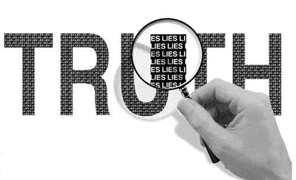

< < < Back
Adored Gay Leftist George Takei Calls Child Molestation “Delightful” & “Delicious” With No Media Outcry – Return Of Kings
Hot on the heels of the liberal hit job directed against Milo Yiannopoulos, footage and audio has emerged of Pizza Hut and Taco Bell spokesman George Takei calling child molestation “delightful” and “delicious.” The actor, most famous for his role in the original Star Trek series and being an unapologetic SJW, is presently one of Hollywood’s biggest haters of Trump.
In three separate interviews, Takei spoke in glowing terms about his molestation at the hands of a California summer camp counselor. He laughed incessantly about it to Howard Stern, on a show called notSam, and with presenters and guests for SiriusXM’s Shade 45. Unlike Milo Yiannopoulos’ generally far more ambiguous comments about relationships involving young and older men (his use “boy” and “girl” being equally applicable to young adults), Takei identified his age at the time of his sexual molestation (13 or 14, depending on the interview).
Return Of Kings will not defend all of Milo’s comments, but George Takei’s are objectively much worse. If Milo deserves to fall on his sword, Takei deserves it ten times over.
George Takei laughed about and even praised his own molestation.
The rise of the #PizzaGate controversy during last year’s US Presidential campaign gives George Takei’s past comments a “delightful” and “delicious” irony, and not just because he is a Pizza Hut spokesman. The implications of pedophilia being potentially rampant amongst senior liberals and their associates have long been discussed on the Roosh V Forum. I have not been involved in the raising of these concerns, but must admit that the meticulous work of others in exposing the accusations has left me rattled. If true, they would represent a shocking insight into how pedophilia is not only condoned but encouraged by very powerful people.
The hypocrisy of a media that elevates Takei to “hero” status and simultaneously tries to destroy Yiannopoulos should not come as a surprise to anyone. Whilst both men are flamboyantly gay, Takei not only tows the SJW line, but actively tries to expand it. As a result, he will probably escape any sanction for his words. Compare this to the witch-hunted Milo, who actually defended the age of consent laws that make sex with minors statutory rape. Tellingly, George Takei did nothing but laud his encounter with his molester.
Where are you about George Takei, Jake Tapper and Pizza Hut?
Political hack Jake Tapper.
CNN’s Jake Tapper, whose credibility has been challenged even more since the Wikileaks revelations about his political bias, has been one of the leaders of the hit job on Milo Yiannopoulos. He excoriated the organizers of the Conservative Political Action Conference (CPAC) for inviting Yiannopoulos to speak at their event. There is next to no doubt that he will remain silent on George Takei’s words, or even defend them if push comes to shove.
The same can be said of the treasure trove of other outlets, from MSNBC to the Huffington Post, who will continue to have a field day at Milo’s expense. These outlets had no trouble calling #PizzaGate alt-right propaganda, but will provide no context whatsoever to the former Breitbart editor’s comments, most notably his stated support for age of consent laws. The new furor about George Takei will at best be given a very undignified silence by them.
Pizza Hut’s position, as well as Taco Bell’s, will be harder to maintain than the double standards of the media’s favorite journalist hacks. Like McDonald’s, KFC, Wendy’s, and a host of other fast food chains, these two corporations need to appeal to Middle America, not only the politically correct souls who flock to CNN. And a major target market for these companies, if not the major target market, is children. Still, whether Pizza Hut and Taco Bell abandon George Takei will depend on the traction his past comments get.
The media will always protect those with the correct leftist talking points

George Takei’s comments in praise of molestation are much older than those being used against Milo Yiannopoulos. Yet, sans some unexpected development, the former will continue his life without media harassment and a concerted campaign to destroy his career.
The aftermath of the hit job on Milo Yiannopoulos means he has now resigned from Breitbart, lost his book deal with Simon & Schuster, and been dropped from CPAC. If anything, George Takei will be given multiple excuses to say he is a victim of alt-right “abuse” by those criticizing his take on child molestation.
People frequently say liberals and SJWs are grossly inconsistent. On one front, however, I disagree. Let’s face it: they will consistently defend their own, no matter what they say.
Read More: The Milo Yiannopoulos Scandal Is A Coordinated Hit Job Against An Establishment Dissident (UPDATED)